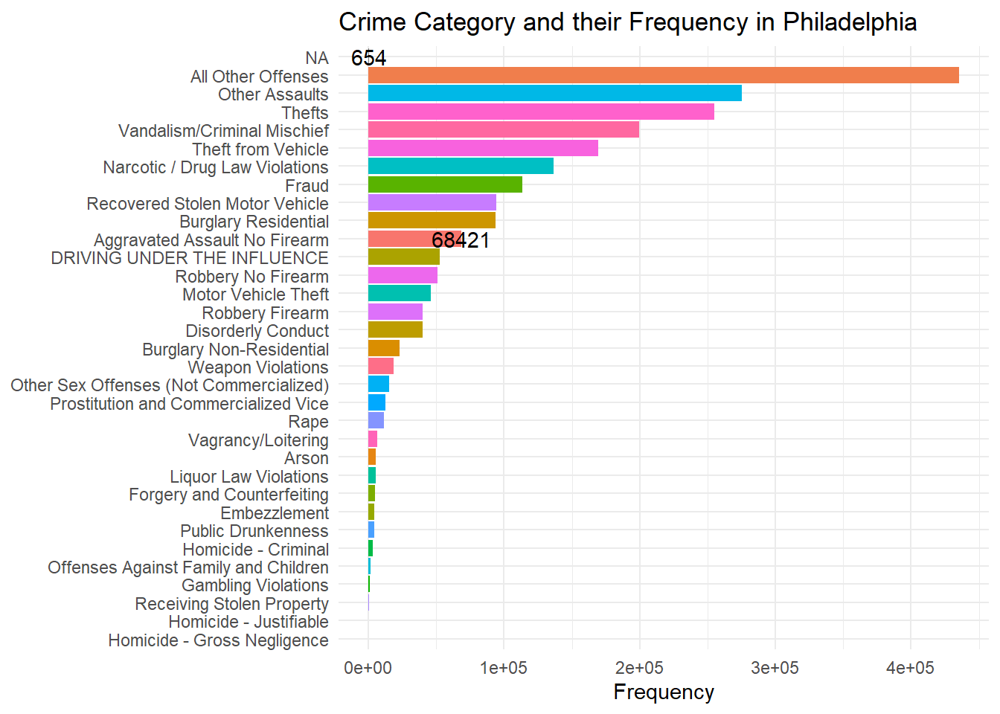
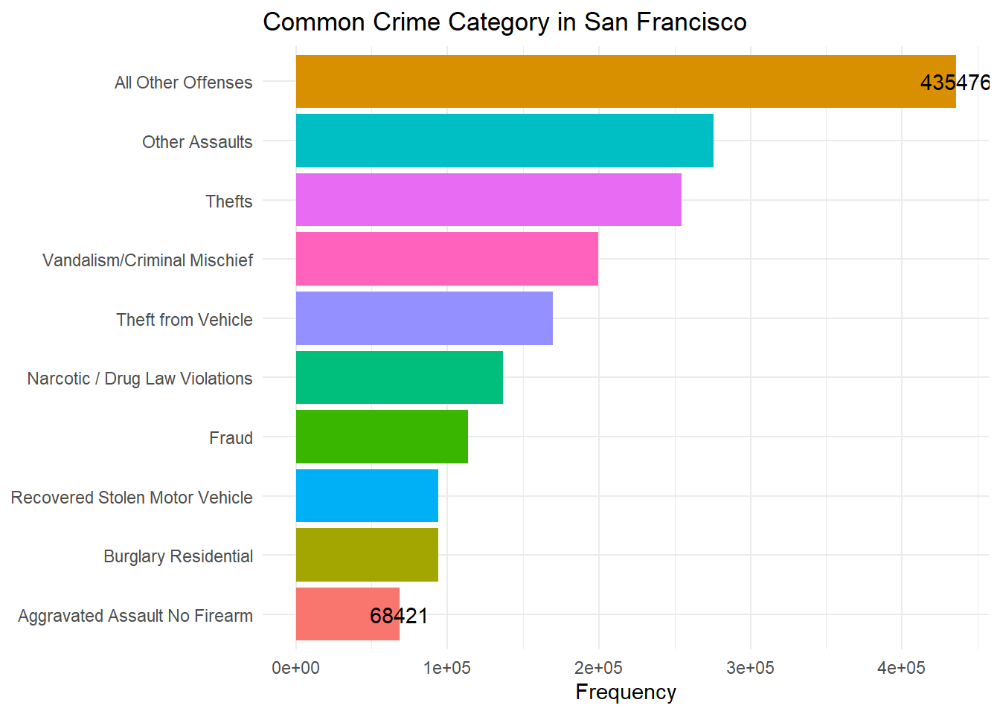
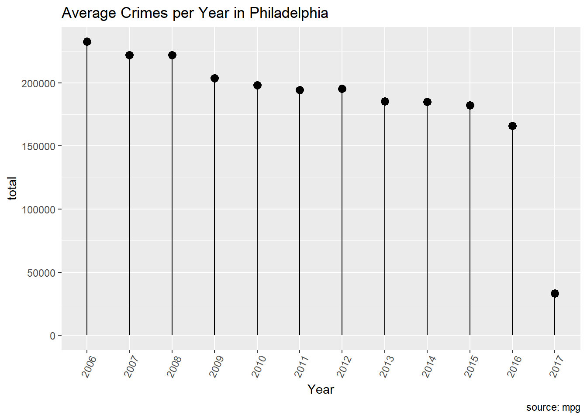

According to the Police Foundation’s the crime analysis is defined as the qualitative and quantitative study of crime and law enforcement information in combination with socio-demographic and spatial factors to apprehend criminals, prevent crime, reduce disorder, and evaluate organizational procedures.
The primary purpose of crime analysis is to assist or support a police department’s operations. These activities include patrolling, patrolling operations, crime prevention and reduction methods, problem-solving, evaluation and accountability of police actions, criminal investigation, arrest, and prosecution. Crime analysis would not be possible without police forces.
So in this project we have taken a small sample of Philadelphia crime data to perform some statistical analysis and understand their trends. The dataset was taken from OpenDataPhilly. The OpenDataPhilly is a source for the open data in the Philadelphia region.
Some of the questions to which I want to find out the answers are :
What are the different categories of crime happening in Philadelphia and what are the most common crimes?
How is the trend of crime as the years progress, whether the crimes are increasing or decreasing? This will help us to determine whether the strategies implemented by the police force to reduce the crime rate is working or not.
The month with the most number of crimes?
The hour with the most number of crimes?
The district in Philadelphia with most number of crimes?
The answers to the above three questions will help us to determine when and where do we need to increase the security?
# A tibble: 33 × 2
Text_General_Code n
<chr> <int>
1 Aggravated Assault No Firearm 68421
2 All Other Offenses 435476
3 Arson 5643
4 Burglary Non-Residential 23182
5 Burglary Residential 93979
6 Disorderly Conduct 39798
7 DRIVING UNDER THE INFLUENCE 52750
8 Embezzlement 4642
9 Forgery and Counterfeiting 4816
10 Fraud 113555
# … with 23 more rows
Now we are going to see the visualized representation of each occurrence of crime category in Philadelphia.
Code
library(ggplot2)ggplot(data = countData, mapping =aes(x= n, y=reorder(Text_General_Code, n)))+geom_col(aes(fill = Text_General_Code))+geom_text(data = countData[c(1,33),],mapping =aes(label = n))+theme_minimal()+labs(title ="Crime Category and their Frequency in Philadelphia",y =NULL,x ="Frequency")+theme(legend.position ="none")

Rearranging the data in decreasing order so that it would be helpful for us to know the major crimes happening in the city.
# A tibble: 33 × 2
Text_General_Code n
<chr> <int>
1 All Other Offenses 435476
2 Other Assaults 275523
3 Thefts 254714
4 Vandalism/Criminal Mischief 199335
5 Theft from Vehicle 169539
6 Narcotic / Drug Law Violations 136599
7 Fraud 113555
8 Recovered Stolen Motor Vehicle 94186
9 Burglary Residential 93979
10 Aggravated Assault No Firearm 68421
# … with 23 more rows
Extracting the data of the top 10 crimes happening in Philadelphia.
Code
top_crime_data<-countData[1:10,]top_crime_data
# A tibble: 10 × 2
Text_General_Code n
<chr> <int>
1 All Other Offenses 435476
2 Other Assaults 275523
3 Thefts 254714
4 Vandalism/Criminal Mischief 199335
5 Theft from Vehicle 169539
6 Narcotic / Drug Law Violations 136599
7 Fraud 113555
8 Recovered Stolen Motor Vehicle 94186
9 Burglary Residential 93979
10 Aggravated Assault No Firearm 68421
Code
ggplot(data = top_crime_data, mapping =aes(x= n, y=reorder(Text_General_Code, n)))+geom_col(aes(fill = Text_General_Code))+geom_text(data = top_crime_data[c(1,10),],mapping =aes(label = n))+theme_minimal()+labs(title ="Common Crime Category in San Francisco",y =NULL,x ="Frequency")+theme(legend.position ="none")

From the above graph we can see that “All Other Offenses” crime category is the most frequently occurring crime. All the other crimes are similar in range to their neighbors but the frequency of “All Other Offenses” is quite high compared to the other crime categories.
Now we are going to perform crime analysis per month. In the below code we are extracting the month and year on which the crime has happened from Dispatch_Date and making them as a separate attribute so that we can perform analysis on that.
#this frame was used to separate Year and Month from the dataset.#But as we took the image of the dataset there is no need to run this block as the Dispatch_Date column is overridden in the new frame#dataset<- dataset %>%# separate(`Dispatch_Date`,c('Year','Month'),sep = "-")#head(dataset)
Count the number of crimes happened on each year from 2006 to 2017.
ggplot(countCrimeByYear, aes(x=Year, y=total)) +geom_point(size=3) +geom_segment(aes(x=Year, xend=Year, y=0, yend=total)) +labs(title="Average Crimes per Year in Philadelphia", caption="source: mpg") +theme(axis.text.x =element_text(angle=65, vjust=0.6))

The above plot shows the trend of the crime as the year progresses. We can see that on an average the crime has decreased by a great factor as the years progressed.
Count the number of crimes happened on each month for all the years from 2006 to 2017.
library(scales)theme_set(theme_classic())# Plotggplot(countCrimeByHour, aes(x=countCrimeByHour$Hour, y=countCrimeByHour$total)) +geom_point(col="tomato2", size=3) +# Draw pointsgeom_segment(aes(x=countCrimeByHour$Hour, xend=countCrimeByHour$Hour, y=min(countCrimeByHour$total), yend=max(countCrimeByHour$total)), linetype="dashed", size=0.1) +# Draw dashed lineslabs(title="Dot Plot for the number of crimes per hour", caption="source: mpg") +coord_flip()
Though from the above graph we can see that the max number of crimes happened at 16:00 hours, in order to infer the time range we need gather information from the first graph and see the collective time range in which maximum number of crimes are happening.
Now we will analyse the number of crimes per district. Below we are counting the number of crimes happened in each district.
In order to know the top 6 districts where the most crimes are happening, we’ll first rearrange the data in descending order and take the top 6 rows from the dataframe. You can see the top 6 districts and the number of crimes happening in each district clearly below.
We’ll plot a pie chart for the above data. The below pie chart shows labels of each district and also a color. The label that has the lightest color is the district where most number of crimes are happening and the label with the darkest color is the district where the least number of crimes are happening. You can also see their value range in the scale shown beside the pie chart.
Code
library(ggplot2)ggplot(countTopCrimeByPoliceDistrict, aes(x ="", y ="", fill = countTopCrimeByPoliceDistrict$total)) +geom_col() +geom_label(aes(label = countTopCrimeByPoliceDistrict$Police_Districts),position =position_stack(vjust =0.5),show.legend =FALSE) +coord_polar(theta ="y")
From the above pie chart we can clearly see that “11” is the district where the most number of crimes are happening in Philadelphia.
In the given dataset we have latitude and longitude values. So let’s try to plot the crime location in the map.
The above map shows the locations of 50 theft crimes happened around Philadelphia in the year 2006.
Reflection
I’ve learned a lot from working on this project. Before taking this course I did not have any experience in R. We see a lot of analytics used in stock exchange. Initially, I thought of choosing a stock exchange dataset and work on trends. But when I came across crime analysis dataset, it had the latitude and longitude values and I want to experiment with plotting the values on the map. So I went with crime analytics dataset. After selecting the dataset I did not understand what kind of inferences can I draw from the dataset. Then I got a question in my mind why do we actually need to analyse the crime data and who will be using this. The answer to this question helped me to start my process of analysis, frame different research questions and draw inferences from it.
My thought process was to understand how each column in the dataset are related. When we find a relation between the columns we can deep dive and narrow down our research further. For example, Initially I found the relation between the crime type and their frequency. Later I went down to find what are most frequent crime categories in Philadelhia.
Later, when I was exploring about the different graphs we can plot with R, I found many interesting plots. But I did not understand how to manipulate the data in order to draw few of the graphs. I need to research and explore new techniques that will help me to manipulate data according to the needs. I tried some new ways to extract and create new column apart from the ones thought in class.
There were many challenges I faced while I was working on this project. I was using the tutorials and techniques learnt in class and also went through different websites in order to know how to manipulate data and draw plots. R is really a powerful tool and there is a lot for me to explore and learn so that I can draw better inferences and plot better visualizations.
Conclusion
Now we have answers to all our questions. The common crime categories in Philadelphia are “All Other Offenses”, “Other Assaults”, “Thefts”, “Vandalism”, “Theft from Vehicle”. Though all the crime category’s frequency are in similar range to their neighbors “All Other Offenses” frequency is way greater than other crime categories. From the aboce Lollipop chart we can see that the crime rate has decreased significantly over the years from 2006 to 2017.
From the monthly crime plot we can infer that though there are differences in the number of crimes happened in each month there isn’t any month that is significantly different from other months. So we can’t develop any strategy according to the monthly analysis.
From hourly analysis we can infer that the crimes have happened at all the times but if you see collectively as a group most of the crimes have happened between 6pm to 12am. From the pie plot we also know the districts where the most number of crimes happened.
From all the above inferences the police need to take strategies like increasing the police force or security during night times, crime prone districts and develop technologies to prevent the crimes. Finally, when we see the yearly plot we can understand that the strategies taken by the Police Force are working as the crime rate has decreased significantly over the years.
Bibliography
Dataset from Kaggle- https://www.kaggle.com/datasets/mchirico/philadelphiacrimedata
Referred crime analysis from - https://cops.usdoj.gov/ric/Publications/cops-w0273-pub.pdf
Wickham, H., & Grolemund, G. (2016). R for data science: Visualize, model, transform, tidy, and import data. OReilly Media.
Wickham, H. (2019). Advanced R. Chapman and Hall/CRC.
Wickham, H. (2010). A layered grammar of graphics. Journal of Computational I and Graphical Statistics, 19(1), 3-28.
Source Code
---title: "Final Project"author: "Siddharth Nammara Kalyana Raman"desription: "Final Project on Philadelphia Crime data"date: "12/14/2022"format: html: toc: true code-fold: true code-copy: true code-tools: true---## IntroductionAccording to the Police Foundation's the crime analysis is defined as the qualitative and quantitative study of crime and law enforcement information in combination with socio-demographic and spatial factors to apprehend criminals, prevent crime, reduce disorder, and evaluate organizational procedures. The primary purpose of crime analysis is to assist or support a police department's operations. These activities include patrolling, patrolling operations, crime prevention and reduction methods, problem-solving, evaluation and accountability of police actions, criminal investigation, arrest, and prosecution. Crime analysis would not be possible without police forces.So in this project we have taken a small sample of Philadelphia crime data to perform some statistical analysis and understand their trends. The dataset was taken from OpenDataPhilly. The OpenDataPhilly is a source for the open data in the Philadelphia region. Some of the questions to which I want to find out the answers are :What are the different categories of crime happening in Philadelphia and what are the most common crimes?How is the trend of crime as the years progress, whether the crimes are increasing or decreasing? This will help us to determine whether the strategies implemented by the police force to reduce the crime rate is working or not.The month with the most number of crimes?The hour with the most number of crimes?The district in Philadelphia with most number of crimes?The answers to the above three questions will help us to determine when and where do we need to increase the security?```{r}#Loading librarieslibrary(tidyverse)library(dplyr)library(summarytools)library(readxl)load("snkraman_final.RData")knitr::opts_chunk$set(echo =TRUE, warning=FALSE, message=FALSE)```## Import the DataImporting the Philadelphia crime data into R.```{r}#dataset<-read_csv("snkraman_final.RData")head(dataset)```## Dataset SummaryThe columns and their descriptions are as follows :1. Dc_Dist - A two character field that names the District boundary.2. Psa - It is a single character field that names the Police Service Area boundary.3. DC_Key - The unique identifier of the crime that consists of Year+District+Unique ID.4. Dispatch_Date_Time - The date and time that the officer was dispatched to the scene.5. Dispatch_Date - It is the dispatch date formatted as character.6. Dispatch_Time - It is the dispatach time formatted as character.7. Hour - It is the generalized hour of the dispatched time.8. Location_Block - The location of crime generalized by the street block.9. UCR_General - Universal Crime Reporting, it is used to compare crimes in other areas.10. Text_General_Code - It defines the crime category.11. Police_Districts - It defines the police district where the crime happened.12. Month - It defines the month and year on which the crime happened.13. Lon - Longitude of the crime location.14. Lat - Latitude of the crime location.```{r}print(dfSummary(dataset, varnumbers=FALSE, plain.ascii=FALSE, style="grid", graph.magnif=0.80, valid.col=TRUE),method='render', table.classes='table-condensed')```##Tidy Data```{r}head(dataset)``````{r}tail(dataset)```Check the number of rows that has null data in the dataset.```{r}sum(is.na(dataset))```Checking the attributes that has null data.```{r}cols_null_data<-colSums(is.na(dataset))colnames(dataset)[cols_null_data>0]```Checking the number of rows in each column that has null data.```{r}sum(is.na(dataset$UCR_General))sum(is.na(dataset$Police_Districts))sum(is.na(dataset$Lon))sum(is.na(dataset$Lat))```Removing the rows from the dataset that has latitude and longitude as a null value.```{r}dataset<-subset(dataset,dataset$Lat!="NA"& dataset$Lon!="NA")head(dataset)```Checking whether there are any rows that has latitude and longitude as the null values after filtering the dataset.```{r}sum(is.na(dataset$Lon))sum(is.na(dataset$Lat))```## Processing and VisualizationThe Text_General_Code represents the crime category.```{r}sum(is.na(dataset$Text_General_Code))```We are calculating the number of occurrences of each crime type in the dataset.```{r}countData<- dataset%>%count(Text_General_Code)countData<-countData[-c(1),]countData```Now we are going to see the visualized representation of each occurrence of crime category in Philadelphia.```{r}library(ggplot2)ggplot(data = countData, mapping =aes(x= n, y=reorder(Text_General_Code, n)))+geom_col(aes(fill = Text_General_Code))+geom_text(data = countData[c(1,33),],mapping =aes(label = n))+theme_minimal()+labs(title ="Crime Category and their Frequency in Philadelphia",y =NULL,x ="Frequency")+theme(legend.position ="none")```Rearranging the data in decreasing order so that it would be helpful for us to know the major crimes happening in the city.```{r}countData<-countData[order(countData$n,decreasing = T),]countData```Extracting the data of the top 10 crimes happening in Philadelphia.```{r}top_crime_data<-countData[1:10,]top_crime_data``````{r}ggplot(data = top_crime_data, mapping =aes(x= n, y=reorder(Text_General_Code, n)))+geom_col(aes(fill = Text_General_Code))+geom_text(data = top_crime_data[c(1,10),],mapping =aes(label = n))+theme_minimal()+labs(title ="Common Crime Category in San Francisco",y =NULL,x ="Frequency")+theme(legend.position ="none")```From the above graph we can see that "All Other Offenses" crime category is the most frequently occurring crime. All the other crimes are similar in range to their neighbors but the frequency of "All Other Offenses" is quite high compared to the other crime categories.Now we are going to perform crime analysis per month. In the below code we are extracting the month and year on which the crime has happened from Dispatch_Date and making them as a separate attribute so that we can perform analysis on that.```{r}head(dataset)``````{r}#this frame was used to separate Year and Month from the dataset.#But as we took the image of the dataset there is no need to run this block as the Dispatch_Date column is overridden in the new frame#dataset<- dataset %>%# separate(`Dispatch_Date`,c('Year','Month'),sep = "-")#head(dataset)```Count the number of crimes happened on each year from 2006 to 2017.```{r}countCrimeByYear <- dataset %>%group_by(Year) %>%summarise(total =n())countCrimeByYear``````{r}ggplot(countCrimeByYear, aes(x=Year, y=total)) +geom_point(size=3) +geom_segment(aes(x=Year, xend=Year, y=0, yend=total)) +labs(title="Average Crimes per Year in Philadelphia", caption="source: mpg") +theme(axis.text.x =element_text(angle=65, vjust=0.6))```The above plot shows the trend of the crime as the year progresses. We can see that on an average the crime has decreased by a great factor as the years progressed. Count the number of crimes happened on each month for all the years from 2006 to 2017.```{r}countCrimeByMonth <- dataset %>%group_by(Month) %>%summarise(total =n())head(countCrimeByMonth)``````{r}head(countCrimeByMonth)theme_set(theme_classic())ggplot(countCrimeByMonth, aes(x = Month, y = total))+geom_col(fill ="firebrick3")+theme_minimal()+labs(title ="Crime per Month in Philadelphia",subtitle ="From 2006 to 2017",x ="Month",y ="Total Crime" )```Counting the number of crimes happened at each hour.```{r}countCrimeByHour <- dataset %>%group_by(Hour) %>%summarise(total =n())head(countCrimeByHour)``````{r}library(scales)theme_set(theme_classic())# Plotggplot(countCrimeByHour, aes(x=countCrimeByHour$Hour, y=countCrimeByHour$total)) +geom_point(col="tomato2", size=3) +# Draw pointsgeom_segment(aes(x=countCrimeByHour$Hour, xend=countCrimeByHour$Hour, y=min(countCrimeByHour$total), yend=max(countCrimeByHour$total)), linetype="dashed", size=0.1) +# Draw dashed lineslabs(title="Dot Plot for the number of crimes per hour", caption="source: mpg") +coord_flip()``````{r}countCrimeByHour <- dataset %>%group_by(Hour) %>%summarise(total =n())countCrimeByHour<-countCrimeByHour[order(countCrimeByHour$total,decreasing = T),]countCrimeByHour<-head(countCrimeByHour)countCrimeByHour``````{r}library(scales)theme_set(theme_classic())# Plotggplot(countCrimeByHour, aes(x=countCrimeByHour$Hour, y=countCrimeByHour$total)) +geom_point(col="tomato2", size=3) +# Draw pointsgeom_segment(aes(x=countCrimeByHour$Hour, xend=countCrimeByHour$Hour, y=min(countCrimeByHour$total), yend=max(countCrimeByHour$total)), linetype="dashed", size=0.1) +# Draw dashed lineslabs(title="Dot Plot for the number of crimes per hour", caption="source: mpg") +coord_flip()```Though from the above graph we can see that the max number of crimes happened at 16:00 hours, in order to infer the time range we need gather information from the first graph and see the collective time range in which maximum number of crimes are happening. Now we will analyse the number of crimes per district. Below we are counting the number of crimes happened in each district.```{r}countCrimeByPoliceDistrict<- dataset %>%group_by(Police_Districts) %>%summarise(total =n())head(countCrimeByPoliceDistrict)```In order to know the top 6 districts where the most crimes are happening, we'll first rearrange the data in descending order and take the top 6 rows from the dataframe. You can see the top 6 districts and the number of crimes happening in each district clearly below.```{r}countTopCrimeByPoliceDistrict<-countCrimeByPoliceDistrict[order(countCrimeByPoliceDistrict$total,decreasing = T),]countTopCrimeByPoliceDistrict<-head(countTopCrimeByPoliceDistrict)countTopCrimeByPoliceDistrict```We'll plot a pie chart for the above data. The below pie chart shows labels of each district and also a color. The label that has the lightest color is the district where most number of crimes are happening and the label with the darkest color is the district where the least number of crimes are happening. You can also see their value range in the scale shown beside the pie chart.```{r}library(ggplot2)ggplot(countTopCrimeByPoliceDistrict, aes(x ="", y ="", fill = countTopCrimeByPoliceDistrict$total)) +geom_col() +geom_label(aes(label = countTopCrimeByPoliceDistrict$Police_Districts),position =position_stack(vjust =0.5),show.legend =FALSE) +coord_polar(theta ="y")```From the above pie chart we can clearly see that "11" is the district where the most number of crimes are happening in Philadelphia.In the given dataset we have latitude and longitude values. So let's try to plot the crime location in the map. ```{r}map_drug <- dataset %>%filter(Year ==2006) %>%select(Location_Block, Lon, Lat)map_drug<-head(map_drug,50)map_drug``````{r}library(leaflet)ico <-makeIcon(iconUrl ="https://cdn.iconscout.com/icon/free/png-256/drugs-26-129384.png",iconWidth=47/2, iconHeight=41/2)map2 <-leaflet()map2 <-addTiles(map2)map2 <-addMarkers(map2, data = map_drug, icon = ico, popup = map_drug[,"Location_Block"])map2```The above map shows the locations of 50 crime scenes happened around Philadelphia in 2006.```{r}map_drug <- dataset %>%filter(Text_General_Code=='Thefts',Year=='2006') %>%select(Location_Block, Lon, Lat)map_drug<-head(map_drug,50)map_drug``````{r}library(leaflet)ico <-makeIcon(iconUrl ="https://cdn.iconscout.com/icon/free/png-256/drugs-26-129384.png",iconWidth=47/2, iconHeight=41/2)map2 <-leaflet()map2 <-addTiles(map2)map2 <-addMarkers(map2, data = map_drug, icon = ico, popup = map_drug[,"Location_Block"])map2```The above map shows the locations of 50 theft crimes happened around Philadelphia in the year 2006.## ReflectionI've learned a lot from working on this project. Before taking this course I did not have any experience in R. We see a lot of analytics used in stock exchange. Initially, I thought of choosing a stock exchange dataset and work on trends. But when I came across crime analysis dataset, it had the latitude and longitude values and I want to experiment with plotting the values on the map. So I went with crime analytics dataset. After selecting the dataset I did not understand what kind of inferences can I draw from the dataset. Then I got a question in my mind why do we actually need to analyse the crime data and who will be using this. The answer to this question helped me to start my process of analysis, frame different research questions and draw inferences from it. My thought process was to understand how each column in the dataset are related. When we find a relation between the columns we can deep dive and narrow down our research further. For example, Initially I found the relation between the crime type and their frequency. Later I went down to find what are most frequent crime categories in Philadelhia.Later, when I was exploring about the different graphs we can plot with R, I found many interesting plots. But I did not understand how to manipulate the data in order to draw few of the graphs. I need to research and explore new techniques that will help me to manipulate data according to the needs. I tried some new ways to extract and create new column apart from the ones thought in class. There were many challenges I faced while I was working on this project. I was using the tutorials and techniques learnt in class and also went through different websites in order to know how to manipulate data and draw plots. R is really a powerful tool and there is a lot for me to explore and learn so that I can draw better inferences and plot better visualizations.## ConclusionNow we have answers to all our questions. The common crime categories in Philadelphia are "All Other Offenses", "Other Assaults", "Thefts", "Vandalism", "Theft from Vehicle". Though all the crime category's frequency are in similar range to their neighbors "All Other Offenses" frequency is way greater than other crime categories. From the aboce Lollipop chart we can see that the crime rate has decreased significantly over the years from 2006 to 2017. From the monthly crime plot we can infer that though there are differences in the number of crimes happened in each month there isn't any month that is significantly different from other months. So we can't develop any strategy according to the monthly analysis. From hourly analysis we can infer that the crimes have happened at all the times but if you see collectively as a group most of the crimes have happened between 6pm to 12am. From the pie plot we also know the districts where the most number of crimes happened.From all the above inferences the police need to take strategies like increasing the police force or security during night times, crime prone districts and develop technologies to prevent the crimes. Finally, when we see the yearly plot we can understand that the strategies taken by the Police Force are working as the crime rate has decreased significantly over the years.## BibliographyDataset from Kaggle- https://www.kaggle.com/datasets/mchirico/philadelphiacrimedataReferred crime analysis from - https://cops.usdoj.gov/ric/Publications/cops-w0273-pub.pdfWickham, H., & Grolemund, G. (2016). R for data science: Visualize, model, transform, tidy, and import data. OReilly Media.Wickham, H. (2019). Advanced R. Chapman and Hall/CRC.Wickham, H. (2010). A layered grammar of graphics. Journal of Computational I and Graphical Statistics, 19(1), 3-28.